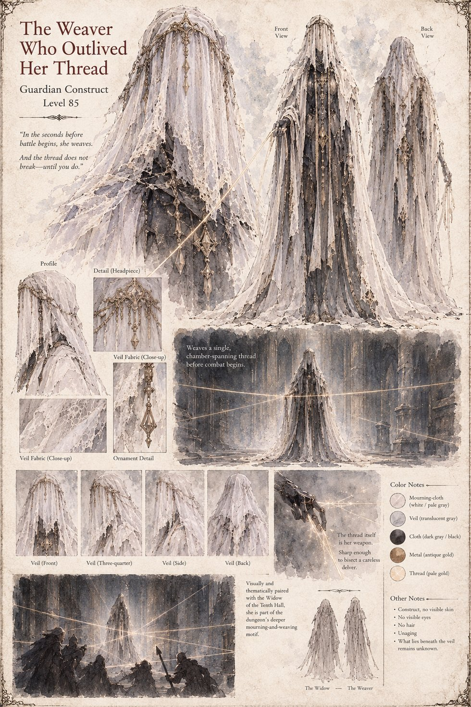

The Weaver Who Outlived Her Thread
Guardian Construct · Level 85
Veiled like the Widow before her, in mourning-cloth the guild long ago stopped finding strange, she weaves a single unbroken thread across the width of her chamber in the seconds before a fight begins — a thread sharp enough to cut a careless party in half simply for walking through it. No visible skin, eyes, or hair; what's beneath the veil has never been confirmed. Visually and thematically paired with the Widow as part of the Catacomb's deeper mourning-and-weaving motif.
“In the seconds before battle begins, she weaves. And the thread does not break — until you do.”
Appears in The Stolen Prince War